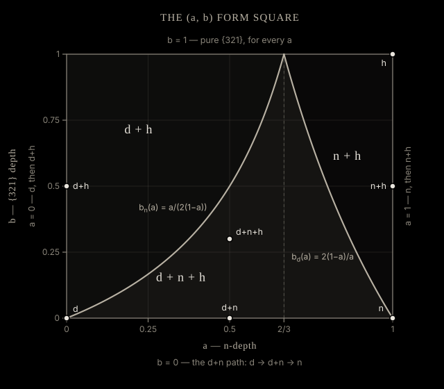

Gallery
The seven habits the sliders can reach, rendered live by the engine. Click a tile to load it in the viewer.
What the sliders mean
Two of the five sliders change the crystal. The other three change how you look at it.
Habit
The Habit slider runs t from 0 to 2 along a single path through the real garnet forms:
d{110} → d+n → n{211} → n+h → {321}
For t ≤ 1 the trapezohedron n{211} grows inward into the rhombic dodecahedron d{110}: at t = 0 the n faces are exactly tangent to d and invisible; by t = 1 they have eaten d entirely and only n is left. For t > 1 the hexoctahedron {321} grows inward into n the same way, reaching pure {321} at t = 2. Nothing is interpolated between shapes — each position is a solid built from the three face-plane sets at their own distances from the centre.
{321} bevel
The bevel slider runs m from 0 to 1 and pulls hexoctahedral {321} faces onto whatever is already on screen, independently of where the Habit slider sits. On a plain dodecahedron it gives d+h — the canonical hexoctahedral bevels on a dodecahedron. On the d+n combination it gives d+n+h. At t = 2 the shape is pure {321} for every m, because there is nothing left to bevel.
The form space behind them
Both sliders are a path across one two-parameter square. The primitive is formAt(a, b). Here a is n-depth, sweeping the n{211} planes inward from tangency with d to the point where d vanishes; b is {321}-depth, sweeping the h planes inward from tangency with the d+n solid to the point where the last of d or n vanishes. Both run over [0, 1], so the whole space is the unit square. The two sliders map onto it through pathAB(t, m) — for t ≤ 1 that is simply (a, b) = (t, m); above t = 1, a is pinned at 1 and b carries the rest.

tools/region-map.js.Which forms actually survive is decided by two curves. The n faces vanish at bn(a) = a / (2(1 − a)), valid for a ≤ 2/3; the d faces vanish at bd(a) = 2(1 − a) / a, valid for a ≥ 2/3. Both reach b = 1 at a = 2/3, so they cross exactly there. That splits the square into three regions: d+n+h below both curves (about 36% of the square), d+h above bn for a < 2/3 (about 45%), and n+h above bd for a > 2/3 (about 19%).
The four edges of the square are the pure paths. b = 0 is the d+n path the Habit slider follows with the bevel off. b = 1 is pure {321} for every a. a = 0 gives d, then d+h. a = 1 gives n, then n+h.
The reason n disappears so quickly as the bevel comes on at low a is a fact about directions, not about the parameterization: ⟨321⟩ lies on the great circle between ⟨110⟩ and ⟨211⟩, so the {321} faces bevel the d–n edge directly. They eat the very edge the n faces sit on.
Variety, Opacity, Spin
Variety recolours the wireframe — white, then pyrope, almandine, spessartine, hessonite, demantoid, uvarovite. The colours are a display choice tuned for a black background; they are not measured or physically accurate, and they change nothing about the geometry. Opacity scales the master alpha of every edge, from 5% to 100%. Spin scales the rotation rate from 0 (frozen) to 3×.
The habit and species caption under the viewer is keyed off formsPresent — a census of the plane ids actually present in the wireframe on screen, not a prediction from the slider position. If a form has been clipped away, the label knows.
How it works
Nothing here is modelled. Each frame is a convex solid rebuilt from scratch out of face planes, and the wireframe you see is whatever survived the clipping.
Forms from Miller indices
Garnet crystallizes in the isometric system, point group m-3m — the full cubic symmetry, 48 operations. A crystal form {hkl} is not one face but the complete set of faces that symmetry generates from a single Miller index. Applying all signed permutations of the index to its direction gives the whole set: {110} yields 12 distinct normals (the rhombic dodecahedron d), {211} yields 24 (the trapezohedron n), {321} yields 48 (the hexoctahedron). Those three are the forms this page sweeps.
Each face is a plane, n̂ · x = k, where n̂ is the unit normal from the Miller index and k is how far the face sits from the centre. The direction is fixed by crystallography; k is the only free number. A large k puts the plane outside the solid, where it cuts nothing and no face appears; lower it and the face nucleates, grows, and eventually consumes its neighbours.
Building the solid
The engine always assembles the same 84 planes — 12 d, 24 n, 48 h — at whatever k the current (a, b) implies, then clips. Each plane starts as a large square lying in itself and is cut by Sutherland–Hodgman clipping against every one of the other 83 half-spaces in turn. What is left is that face's polygon; if nothing is left, the plane contributes no face. Nowhere does the pipeline hold a list of which forms are showing — presence is an outcome. The viewer runs the whole build live, every frame, in roughly 0.8 ms warm.
Edges are keyed by the pair of planes that meet there — literally strings like "d3|n17". That gives every edge an identity that survives a change of parameters, which is what makes continuity testable rather than an impression: Hausdorff distance and shared-edge displacement between neighbouring parameter points are only meaningful because the edges have names. It is also why formsPresent is a census rather than a prediction — it reads which plane ids appear in the edge keys of the shape that was actually built.
The transition constants are exact radicals, not fitted values. The {211} planes span k = 2/√3, where they are tangent to the dodecahedron, down to √3/2, where d vanishes. The {321} planes span ktan = (1 + √3·kn)/√7, tangent to the d+n solid along its d–n edge, down to kpure = min(5/(2√7), kn·3√6/(2√14)) — whichever of d or n runs out first.
One consequence looks like a bug and is not. Crossing t ≈ 1 the face count jumps from 24 to 72 in a single step, because all 48 {321} faces nucleate at once, at zero area. Symmetry requires it: at the tangency constant the {321} planes touch the trapezohedron simultaneously at its 12 ⟨110⟩ vertices, four planes per vertex. There is no parameter value at which only some of them exist.
What the seven habits are
| Form | V | E | F |
|---|---|---|---|
| d{110} dodecahedron | 14 | 24 | 12 |
| d + n | 62 | 96 | 36 |
| n{211} trapezohedron | 26 | 48 | 24 |
| n + h | 74 | 144 | 72 |
| {321} hexoctahedron | 26 | 72 | 48 |
| d + h | 62 | 120 | 60 |
| d + n + h | 110 | 192 | 84 |
The face census is as characteristic as the counts. Alone, d is 12 quadrilaterals, n is 24 quadrilaterals, h is 48 triangles. In combination the polygons change: wherever n appears alongside another form the n faces become hexagons; on d+h and d+n+h the h triangles become quadrilaterals. In the d+n+h region all 84 planes survive as faces at once. Vertex radii fall into a few exact shells — measured against the engine's normalization radius, d has vertices at 1 and √3/2, n at 1, 2√2/3 and √3/2, h at 1, √3/2 and 3√2/5.
Verified, not asserted
A 13-check suite (npm test) re-derives these properties from the engine's output rather than trusting them: V/E/F and χ per region; invariance under all 48 operations of m-3m, deviating by no more than 3.1 × 10−14 across the test grid; form purity at the pure-form corners; the face census; the vertex shells; tangency-constant pinning by presence and absence at k(1 ± 10−4); continuity across the t = 1 seam and in 2D; RangeError domain semantics; a vm load smoke test that loads the engine in a browser-like context; and golden-path fixtures against the pre-1.0 engine.
One honest caveat, kept as the project's own notes state it: χ = 2 is not an invariant for arbitrary (a, b). It holds everywhere the sliders, the ladder or the test grid can reach, but the engine's short-edge cull drops an emerging form's edges inside windows about 10−5 wide, where its faces have already split the neighbouring form's vertices. Those windows sit at the pure-form corners and run along the bn and bd transition curves, roughly 3 × 10−5 wide in b. The measure is negligible and nothing user-facing lands inside one — but it is a documented exception, not a theorem.
The numerics behind all of this — the 1.000001 nudge factors and which of them are load-bearing, the attribution tolerance and the window it has to live in, the exact radicals — are written up in CLAUDE.md, and the review that produced them in REVIEW.md.
Using the engine
src/engine.js is the whole geometry layer: pure functions, no DOM, no dependencies. It works as a classic script (setting window.GarnetEngine) and under require in node, from the same file.
API
formAt(a, b)- The primitive — the form at n-depth a and {321}-depth b, both in [0, 1].
shapeAt(t, m = 0)- The habit slider:
formAt(...pathAB(t, m)), with t in [0, 2] and m in [0, 1]. pathAB(t, m)- Maps the two slider values to (a, b). Continuous at t = 1; m = 0 reproduces the original single-slider path.
formsPresent(map)- Reads a shape back and returns
{ d, n, h }booleans — a census of the plane ids actually in it, not a prediction. makePlanes(dir, k, tag)- Expands a Miller direction into its full set of face planes by signed permutation, all at distance k, with ids
tag0…tagN. clipShape(planes)- Clips any array of planes into a wireframe. This is the part that is not garnet-specific: other {hkl} forms are geometrically representable the same way.
KN0 KN1 KH0 KH1 KH_DVAN NUDGE- The transition constants, built from exact radicals.
KN0= 2/√3, n tangent to d (n nucleates);KN1= √3/2, d vanishes into n;KH0= 5√6/(3√14), h tangent to n;KH1= 3√6/(2√14), n vanishes into h;KH_DVAN= 5/(2√7), d vanishes into h.NUDGE= 1.000001 is applied outward to a nucleating endpoint and inward to a vanishing one — and it is already folded into the exported values, soKN0andKH0come back as the radical ×NUDGEandKH1as the radical ÷NUDGE. OnlyKN1andKH_DVANare exported unnudged. The KH constants are stated for n at k = 1.
What comes back
Every shape function returns a Map whose key is an edge identity — the two plane ids that meet at that edge, joined by a bar and sorted, e.g. "d3|n17" — and whose value is [p1, p2], the edge's two endpoints as 3-element arrays of numbers. Coordinates are normalized so the outermost vertex sits at radius 1.7. map.size is therefore the edge count.
The domain is enforced: NaN, undefined, Infinity or an out-of-range value throws a RangeError rather than returning an empty shape. Boundaries are inclusive — formAt(0, 0) and formAt(1, 1) are both legal.
Using it
In a browser — the engine file can be loaded straight from this Pages site, no install:
<script src="https://doxastic-defeater.github.io/garnet-habits/src/engine.js"></script>
<script>
const { formAt, formsPresent } = window.GarnetEngine;
const edges = formAt(0.5, 0.3); // Map of 192 edges
console.log(formsPresent(edges)); // { d: true, n: true, h: true }
</script>In node, from a clone of the repo:
const G = require('./src/engine.js');
const shape = G.shapeAt(0.5, 0.3); // Map<"d3|n17", [[x,y,z],[x,y,z]]>
console.log(shape.size, G.formsPresent(shape)); // 192 { d: true, n: true, h: true }
for (const [key, [p1, p2]] of shape) { /* draw a line from p1 to p2 */ }Run npm test for the geometry verification suite — 13 checks, node 18 or newer, no dependencies.
One practical limit, from the code review: the clipper's working square and its absolute tolerance cap the usable k range at roughly [0.2, 11]. Well above that every face clips to nothing and an empty Map comes back with no error.
References
Every crystallographic and species statement on this page traces to one of the following, or to the project's own verified geometry notes. Where a claim could not be sourced, it was left out.
-
mindat.org — Crystallography: The Isometric System
One of the three sources cited in the project review. General reference for the isometric system and the forms it admits. -
Encyclopædia Britannica — Garnet
One of the three sources cited in the project review. General reference for the garnet group as an isometric mineral group. -
Geology is the Way — Garnet group
One of the three sources cited in the project review. It describes garnet as forming equant crystals of dodecahedron or trapezohedron habit and covers the six end-members named in the Variety slider. The review's finding that habit correlates with composition — and so the species pairings in the habit captions — rests on these three sources together. -
Wikipedia — Miller index
General background on the notation only: {hkl} for the set of planes equivalent to (hkl) under the symmetry of the lattice, ⟨hkl⟩ for the equivalent directions. Not a source for any statement about garnet. - CLAUDE.md — architecture, the crystallography invariants, the exact truncation radicals, the region-map closed forms, and the Euler caveat. Every number quoted on this page comes from here or from the test suite that enforces it.
- REVIEW.md — the independent crystallography and code review, with the verdicts, the three sources above, and the resolution table for v1.0.0. It also records what the reviewers could not source, which is why some forms are absent from this site.